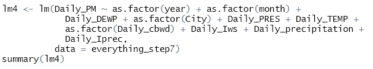

Featured Project: 32 Bit MIPS CPU
CPU Features
This is a 32 bit MIPS CPU that features 5 a stage pipeline, with special modules for extral control and dealing with data hazards.

This is a 32 bit MIPS CPU that features 5 a stage pipeline, with special modules for extral control and dealing with data hazards.

Below are other projects that I have worked on.
Project to predict PM2.5 air pollution readings across five cities in China from 2010 to 2015.
Fit a multivariate linear regression and a series of autoregressive time series models.
Part of a group project test five different models to classify the success of Netflix movies.
I created the Naive-Bayes model to classify movies on Netflix that were considered hits.
An assortment of Python, SQL, R code written for a variety of different use-cases.
Examples include work completed for projects at both the undergraduate and graduate levels.
Python code for an undergrad final project
Report for a ResNet50 image classification model to identify cassava leaf diseases.
I conducted background research and wrote the Abstract, Business Problem, Results, and Conclusion sections.
Report for a project to analyze traffic accidents in the state of Arizona.
I conducted the background research for the project and wrote the Abstract, Introduction, and Background sections.